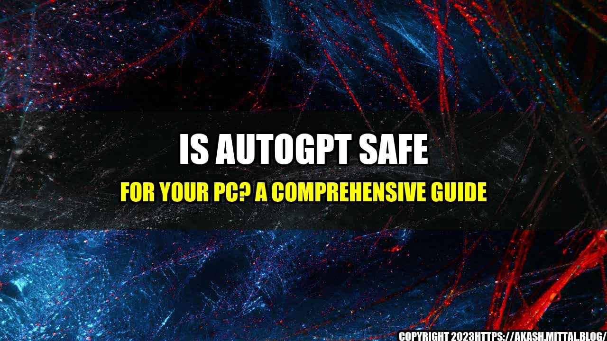

Is AutoGPT Safe for Your PC? A Comprehensive Guide

Have you ever felt like you spend too much time trying to come up with the perfect text for a blog post or an email? Maybe you've even considered using an AI-powered text generator like AutoGPT to save time and effort. But wait, is AutoGPT safe for your PC and online privacy? In this article, we'll explore the pros and cons of AutoGPT and help you make an informed decision.
What is AutoGPT?
AutoGPT is an AI-powered text generator that uses deep learning algorithms to generate natural language text based on a given prompt. It is designed to help users save time and effort in writing various types of content, including blog posts, emails, product descriptions, and more. AutoGPT is available as a web app and can be accessed through any browser.
The Pros of AutoGPT
AutoGPT has several advantages that make it a popular choice among content creators and marketers. Here are some of them:
- Time-saving: AutoGPT can generate high-quality text in a matter of seconds, saving you hours of writing time.
- Versatile: AutoGPT can be used for various types of content, from social media posts to academic papers.
- Cost-effective: Compared to hiring a professional writer or editor, AutoGPT is much cheaper and more accessible.
- Customizable: AutoGPT allows users to adjust the tone and style of the generated text to match their brand voice and audience.
The Cons of AutoGPT
Despite its advantages, AutoGPT has some disadvantages that users should be aware of. Here are some of them:
- Limited creativity: AutoGPT relies on patterns and examples from its training data, which can sometimes result in repetitive or formulaic output.
- Lack of context awareness: AutoGPT cannot understand the context or nuances of a given prompt, which can lead to irrelevant or inappropriate text.
- Privacy concerns: AutoGPT is a cloud-based service and stores all user data on its servers, which can raise privacy and security concerns for sensitive content.
- Technical issues: AutoGPT can sometimes generate errors or glitches that require manual editing and monitoring.
The Verdict: Is AutoGPT Safe for Your PC?
After weighing the pros and cons of AutoGPT, it is safe to say that the tool can be a useful addition to your content creation toolkit, as long as you use it responsibly and with caution. Here are some tips for using AutoGPT safely:
- Protect your privacy: Before using AutoGPT, make sure you read the privacy policy and terms of service carefully and ensure that you are comfortable with the level of data collection and storage.
- Proofread and edit: Although AutoGPT can generate text quickly, it is still important to proofread and edit the output, as errors and inconsistencies can still occur.
- Use it smartly: AutoGPT is not a replacement for human creativity and expertise, so use it as a complement to your own writing skills and knowledge.
The Bottom Line
AutoGPT is a powerful text generation tool that can be a time-saver for busy content creators and marketers. However, it also comes with some limitations and risks that users should be aware of. By using AutoGPT responsibly and wisely, you can benefit from its advantages while minimizing its drawbacks.
References:
- https://autogpt.com/privacy-policy
- https://autogpt.com/terms-of-service
Hashtags and Categories:
- Hashtags: #AutoGPT #textgeneration #AIwriting #contentcreation
- Categories: AI, Content Marketing, Technology
Curated by Team Akash.Mittal.Blog
Share on Twitter Share on LinkedIn